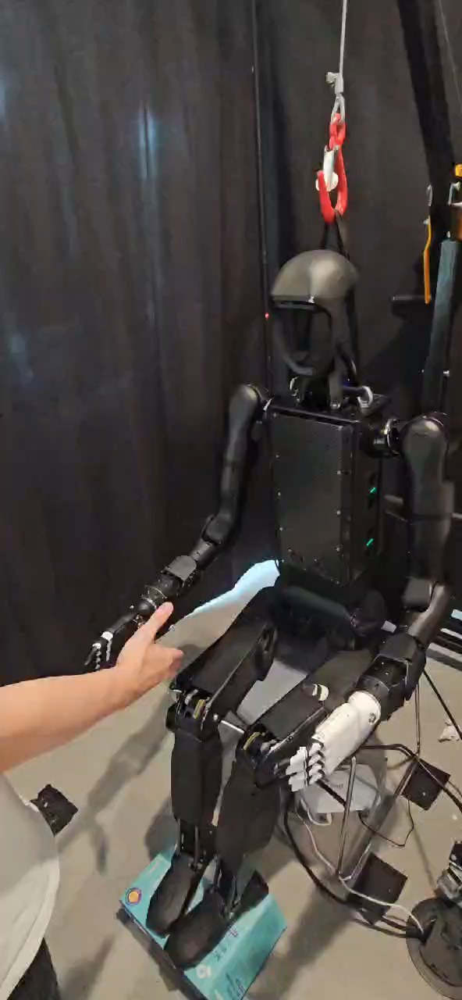

Humanoid Everyday · human-robot-7__shake_hand_with_person
Shake hand with person

Visual review action_review.json
{
"prompt_protocol": "humanoid_action_v1",
"prompt_provenance": "visually_authored_from_video_and_initial_frame",
"reviewed_contact_sheets": [
"sheet_001.jpg",
"sheet_002.jpg",
"sheet_003.jpg"
],
"inspected_frame_stride": 2,
"inspected_sampled_frame_count": 154,
"initial_scene": "Humanoid faces the camera in a supported upright pose. Its anatomical right black hand is on image left near a person’s offered hand; anatomical left white hand is on image right beside the thigh. No manipulated object is present.",
"observed_sequence": [
{
"source_frame_interval_inclusive": [
0,
30
],
"action": "Person presents a hand near the robot’s low, open right hand. Robot remains nearly stationary initially.",
"confidence": "high"
},
{
"source_frame_interval_inclusive": [
32,
70
],
"action": "Robot bends the right elbow and raises its open hand, then extends it toward the person’s hand; person keeps the hand offered.",
"confidence": "high"
},
{
"source_frame_interval_inclusive": [
72,
98
],
"action": "Person wraps the offered hand around the robot’s right hand, establishing a handshake clasp. Exact finger closure is partly hidden by the person’s hand.",
"confidence": "high for clasp, moderate for robot finger articulation"
},
{
"source_frame_interval_inclusive": [
100,
264
],
"action": "Clasp remains while the person and robot right forearm move their joined hands vertically through several repeated up/down strokes. Left hand stays near left thigh.",
"confidence": "high"
},
{
"source_frame_interval_inclusive": [
266,
276
],
"action": "Hands separate, with robot’s right fingers visibly open; person withdraws downward as the robot keeps its hand briefly extended.",
"confidence": "high"
},
{
"source_frame_interval_inclusive": [
278,
306
],
"action": "Person’s hand continues withdrawing out of view and the robot lowers its open right hand toward its right thigh; left hand remains by left thigh.",
"confidence": "high"
}
],
"arm_hand_roles": {
"right": "Active handshake hand: raises/extends toward the offered human hand, remains clasped during repeated vertical handshake strokes, separates open, then lowers beside the right thigh.",
"left": "Inactive in the social interaction; white hand remains by the left thigh with small incidental movement, no support or transfer.",
"person": "Offers a hand, wraps it around the robot’s right hand, participates in the vertical shake strokes, then releases and withdraws.",
"coordination": "One robot hand and one human hand maintain a shared clasp while moving up/down together; there is no robot hand-to-hand transfer or left-hand assistance."
},
"anatomical_side_evidence": {
"evidence": "Initial PNG shows the front face, chest and legs. The black active hand on image left can be traced through the forearm and upper arm to the shoulder on the robot’s anatomical right. White hand on image right connects to the anatomical left shoulder. Native frames 0, 46, 70, 140, 170, 210 and 306 preserve this attachment evidence.",
"confidence": "high",
"uncertainty": "No anatomical-side uncertainty."
},
"terminal_state": "Handshake has ended. Person’s hand is withdrawn from the robot’s hand. Robot’s open right hand hangs low beside its right thigh; white left hand remains near the left thigh. No stepping or object transfer occurs.",
"uncertainties": [
"Robot finger closure during the clasp is partly occluded by the person’s hand; physical contact and repeated joined-hand motion are clear.",
"The footage cannot distinguish how much of the shaking force is generated by the person versus commanded robot motion, or measure grip force."
],
"annotation_discrepancies": [
"Original annotation names social gesture recognition and appropriate grip force; these internal capabilities and force quality cannot be verified visually. The visible handshake action matches the task name."
],
"evidence_frame_indices": [
0,
46,
70,
90,
140,
170,
210,
240,
266,
270,
276,
306
],
"selected_execution_status": "success",
"inspection_coverage": {
"source_frame_count": 307,
"sampled_frame_count": 154,
"stride": 2,
"coverage": "Viewed all three contact sheets covering even frames 0–306 across the complete source clip, plus native transition/final images and native source initial PNG."
},
"video_id": "human-robot-7",
"dataset": "Humanoid_Everyday",
"dedicated_review_agent": "review_he_human_robot_7",
"review_source_video": "Humanoid_Everyday/human-robot-7__shake_hand_with_person/third_person/original/original.mp4",
"source_frame_count": 307,
"source_fps": 30.000977230528683,
"native_detail_frames": [
0,
46,
70,
90,
140,
170,
210,
240,
266,
270,
276,
306
],
"world_model_prompt": "The humanoid raises its right hand to meet the person’s offered hand and clasps it for a handshake. The person and robot move their joined hands up and down several times, then separate; the robot lowers its open right hand beside its thigh while its left hand remains by the other thigh. Keep the camera fixed; preserve robot geometry, physically valid joint motion, and normal gripper opening and closing.",
"original_task_instruction": "Shaking hands with a person, demonstrating social gesture recognition, appropriate grip force, and natural human-robot physical interaction.",
"selected_segment": {
"start_frame": 0,
"end_frame_exclusive": 307,
"reason": "Complete original single-task reference; no cropping or trimming requested."
},
"source_video_sha256": "02cf6af69c66c2c3b8584bf15fa1dc8fc4ee6a896c11ca7502d9e2278891dc48",
"review_completed_at": "2026-10-13T17:26:10.447106+00:00"
}